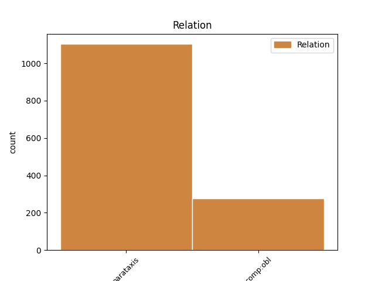
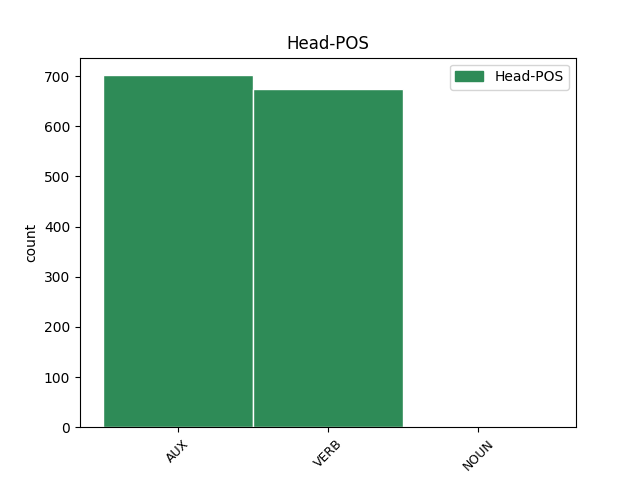
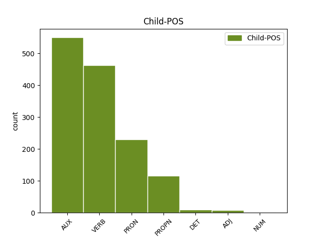

Distribution of features within this leaf



Agreement Rules sorted by frequency.
- When the dependent token is the parataxis(parataxis) of the head token, and the dependent token is AUX.
1 Večjo _ _ _ _ 0 _ _ _
2 količino _ _ _ _ 0 _ _ _
3 pomnilnika _ _ _ _ 0 _ _ _
4 ima imeti VERB Vmpr3s-n Aspect=Imp|Mood=Ind|Number=Sing|Person=3|Polarity=Pos|Tense=Pres|VerbForm=Fin 0 _ _ _
5 grafična _ _ _ _ 0 _ _ _
6 kartica _ _ _ _ 0 _ _ _
7 , _ _ _ _ 0 _ _ _
8 večje _ _ _ _ 0 _ _ _
9 resolucije _ _ _ _ 0 _ _ _
10 barv _ _ _ _ 0 _ _ _
11 in _ _ _ _ 0 _ _ _
12 dimenzij _ _ _ _ 0 _ _ _
13 zaslona _ _ _ _ 0 _ _ _
14 je biti AUX Va-r3s-n Mood=Ind|Number=Sing|Person=3|Polarity=Pos|Tense=Pres|VerbForm=Fin 4 parataxis _ Dep=0|Rel=Root
15 sposobna _ _ _ _ 0 _ _ _
16 . _ _ _ _ 0 _ _ _
1 Generalni _ _ _ _ 0 _ _ _
2 direktor _ _ _ _ 0 _ _ _
3 Mednarodnega _ _ _ _ 0 _ _ _
4 sklada _ _ _ _ 0 _ _ _
5 je biti AUX Va-r3s-n Mood=Ind|Number=Sing|Person=3|Polarity=Pos|Tense=Pres|VerbForm=Fin 0 _ _ _
6 ponavadi _ _ _ _ 0 _ _ _
7 Evropejec _ _ _ _ 0 _ _ _
8 , _ _ _ _ 0 _ _ _
9 Svetovno _ _ _ _ 0 _ _ _
10 banko _ _ _ _ 0 _ _ _
11 pa _ _ _ _ 0 _ _ _
12 vodi voditi VERB Vmpr3s Aspect=Imp|Mood=Ind|Number=Sing|Person=3|Tense=Pres|VerbForm=Fin 5 parataxis _ Dep=0|Rel=Root
13 Američan _ _ _ _ 0 _ _ _
14 . _ _ _ _ 0 _ _ _
1 Priprava _ _ _ _ 0 _ _ _
2 : _ _ _ _ 0 _ _ _
3 Koruzne _ _ _ _ 0 _ _ _
4 storže _ _ _ _ 0 _ _ _
5 » _ _ _ _ 0 _ _ _
6 slečemo _ _ _ _ 0 _ _ _
7 « _ _ _ _ 0 _ _ _
8 in _ _ _ _ 0 _ _ _
9 jim on PRON Pp3mpd--y Case=Dat|Gender=Masc|Number=Plur|Person=3|PronType=Prs|Variant=Short 10 comp:obl _ Dep=10|Rel=Obj
10 odstranimo odstraniti VERB Vmer1p Aspect=Perf|Mood=Ind|Number=Plur|Person=1|Tense=Pres|VerbForm=Fin 0 _ _ _
11 laske _ _ _ _ 0 _ _ _
12 . _ _ _ _ 0 _ _ _
1 DUBLIN Dublin PROPN Npmsn Case=Nom|Gender=Masc|Number=Sing 6 parataxis _ Dep=0|Rel=Root
2 Irsko _ _ _ _ 0 _ _ _
3 predsedstvo _ _ _ _ 0 _ _ _
4 Evropske _ _ _ _ 0 _ _ _
5 unije _ _ _ _ 0 _ _ _
6 je biti AUX Va-r3s-n Mood=Ind|Number=Sing|Person=3|Polarity=Pos|Tense=Pres|VerbForm=Fin 0 _ _ _
7 sporočilo _ _ _ _ 0 _ _ _
8 , _ _ _ _ 0 _ _ _
9 da _ _ _ _ 0 _ _ _
10 bo _ _ _ _ 0 _ _ _
11 evropska _ _ _ _ 0 _ _ _
12 povezava _ _ _ _ 0 _ _ _
13 za _ _ _ _ 0 _ _ _
14 generalnega _ _ _ _ 0 _ _ _
15 direktorja _ _ _ _ 0 _ _ _
16 Mednarodnega _ _ _ _ 0 _ _ _
17 denarnega _ _ _ _ 0 _ _ _
18 sklada _ _ _ _ 0 _ _ _
19 predlagala _ _ _ _ 0 _ _ _
20 nekdanjega _ _ _ _ 0 _ _ _
21 španskega _ _ _ _ 0 _ _ _
22 ministra _ _ _ _ 0 _ _ _
23 za _ _ _ _ 0 _ _ _
24 gospodarstvo _ _ _ _ 0 _ _ _
25 Rodriga _ _ _ _ 0 _ _ _
26 Rata _ _ _ _ 0 _ _ _
27 . _ _ _ _ 0 _ _ _
1 Čehov Čeh PROPN Npmpg Case=Gen|Gender=Masc|Number=Plur 4 comp:obl _ Dep=4|Rel=Obj
2 niso _ _ _ _ 0 _ _ _
3 nič _ _ _ _ 0 _ _ _
4 vprašali vprašati VERB Vmep-pm Aspect=Perf|Gender=Masc|Number=Plur|VerbForm=Part 0 _ _ _
5 . _ _ _ _ 0 _ _ _
1 Mogoče _ _ _ _ 0 _ _ _
2 boste _ _ _ _ 0 _ _ _
3 prav _ _ _ _ 0 _ _ _
4 vi _ _ _ _ 0 _ _ _
5 prvi prvi ADJ Mlompn Case=Nom|Gender=Masc|Number=Plur|NumType=Ord 6 comp:obl _ Dep=6|Rel=Obj
6 opazili opaziti VERB Vmep-pm Aspect=Perf|Gender=Masc|Number=Plur|VerbForm=Part 0 _ _ _
7 , _ _ _ _ 0 _ _ _
8 da _ _ _ _ 0 _ _ _
9 ima _ _ _ _ 0 _ _ _
10 mlada _ _ _ _ 0 _ _ _
11 mama _ _ _ _ 0 _ _ _
12 čustvene _ _ _ _ 0 _ _ _
13 težave _ _ _ _ 0 _ _ _
14 . _ _ _ _ 0 _ _ _
1 Tudi _ _ _ _ 0 _ _ _
2 temu ta DET Pd-msd Case=Dat|Gender=Masc|Number=Sing|PronType=Dem 4 comp:obl _ Dep=4|Rel=Obj
3 je _ _ _ _ 0 _ _ _
4 dal dati VERB Vmep-sm Aspect=Perf|Gender=Masc|Number=Sing|VerbForm=Part 0 _ _ _
5 de _ _ _ _ 0 _ _ _
6 Terzi _ _ _ _ 0 _ _ _
7 na _ _ _ _ 0 _ _ _
8 izbiro _ _ _ _ 0 _ _ _
9 , _ _ _ _ 0 _ _ _
10 ali _ _ _ _ 0 _ _ _
11 bo _ _ _ _ 0 _ _ _
12 dve _ _ _ _ 0 _ _ _
13 leti _ _ _ _ 0 _ _ _
14 plačeval _ _ _ _ 0 _ _ _
15 vojaka _ _ _ _ 0 _ _ _
16 , _ _ _ _ 0 _ _ _
17 ki _ _ _ _ 0 _ _ _
18 bo _ _ _ _ 0 _ _ _
19 stražil _ _ _ _ 0 _ _ _
20 pazinski _ _ _ _ 0 _ _ _
21 grad _ _ _ _ 0 _ _ _
22 , _ _ _ _ 0 _ _ _
23 ali _ _ _ _ 0 _ _ _
24 pa _ _ _ _ 0 _ _ _
25 bo _ _ _ _ 0 _ _ _
26 šel _ _ _ _ 0 _ _ _
27 za _ _ _ _ 0 _ _ _
28 štiri _ _ _ _ 0 _ _ _
29 leta _ _ _ _ 0 _ _ _
30 v _ _ _ _ 0 _ _ _
31 ječo _ _ _ _ 0 _ _ _
32 . _ _ _ _ 0 _ _ _
1 Policisti _ _ _ _ 0 _ _ _
2 so _ _ _ _ 0 _ _ _
3 zoper _ _ _ _ 0 _ _ _
4 vse _ _ _ _ 0 _ _ _
5 omenjene _ _ _ _ 0 _ _ _
6 osumljene _ _ _ _ 0 _ _ _
7 odredili _ _ _ _ 0 _ _ _
8 policijsko _ _ _ _ 0 _ _ _
9 pridržanje _ _ _ _ 0 _ _ _
10 , _ _ _ _ 0 _ _ _
11 pri _ _ _ _ 0 _ _ _
12 njih _ _ _ _ 0 _ _ _
13 opravili _ _ _ _ 0 _ _ _
14 hišne _ _ _ _ 0 _ _ _
15 preiskave _ _ _ _ 0 _ _ _
16 in _ _ _ _ 0 _ _ _
17 trem trije NUM Mlcmpd Case=Dat|Gender=Masc|Number=Plur|NumForm=Word|NumType=Card 18 comp:obl _ Dep=18|Rel=Obj
18 zasegli zaseči VERB Vmep-pm Aspect=Perf|Gender=Masc|Number=Plur|VerbForm=Part 0 _ _ _
19 računalniško _ _ _ _ 0 _ _ _
20 opremo _ _ _ _ 0 _ _ _
21 . _ _ _ _ 0 _ _ _
Disagree Examples:
1 - _ _ _ _ 0 _ _ _
2 Spoznajo spoznati VERB Vmbr3p Mood=Ind|Number=Plur|Person=3|Tense=Pres|VerbForm=Fin 0 _ _ _
3 osnovne _ _ _ _ 0 _ _ _
4 značilnosti _ _ _ _ 0 _ _ _
5 bolezni _ _ _ _ 0 _ _ _
6 : _ _ _ _ 0 _ _ _
7 kaj _ _ _ _ 0 _ _ _
8 je biti AUX Va-r3s-n Mood=Ind|Number=Sing|Person=3|Polarity=Pos|Tense=Pres|VerbForm=Fin 2 parataxis _ Dep=0|Rel=Root
9 astma _ _ _ _ 0 _ _ _
10 in _ _ _ _ 0 _ _ _
11 kako _ _ _ _ 0 _ _ _
12 poteka _ _ _ _ 0 _ _ _
13 . _ _ _ _ 0 _ _ _
1 Poroka _ _ _ _ 0 _ _ _
2 je biti AUX Va-r3s-n Mood=Ind|Number=Sing|Person=3|Polarity=Pos|Tense=Pres|VerbForm=Fin 0 _ _ _
3 potekala _ _ _ _ 0 _ _ _
4 brez _ _ _ _ 0 _ _ _
5 zamude _ _ _ _ 0 _ _ _
6 okoli _ _ _ _ 0 _ _ _
7 poldneva _ _ _ _ 0 _ _ _
8 , _ _ _ _ 0 _ _ _
9 dirko _ _ _ _ 0 _ _ _
10 pa _ _ _ _ 0 _ _ _
11 so biti AUX Va-r3p-n Mood=Ind|Number=Plur|Person=3|Polarity=Pos|Tense=Pres|VerbForm=Fin 2 parataxis _ Dep=12|Rel=PPart
12 prestavili _ _ _ _ 0 _ _ _
13 za _ _ _ _ 0 _ _ _
14 dvajset _ _ _ _ 0 _ _ _
15 minut _ _ _ _ 0 _ _ _
16 . _ _ _ _ 0 _ _ _
1 Želela _ _ _ _ 0 _ _ _
2 je biti AUX Va-r3s-n Mood=Ind|Number=Sing|Person=3|Polarity=Pos|Tense=Pres|VerbForm=Fin 0 _ _ _
3 najverjetneje _ _ _ _ 0 _ _ _
4 , _ _ _ _ 0 _ _ _
5 da _ _ _ _ 0 _ _ _
6 bi _ _ _ _ 0 _ _ _
7 bil _ _ _ _ 0 _ _ _
8 to _ _ _ _ 0 _ _ _
9 le _ _ _ _ 0 _ _ _
10 blag _ _ _ _ 0 _ _ _
11 dotik _ _ _ _ 0 _ _ _
12 ob _ _ _ _ 0 _ _ _
13 srečanju _ _ _ _ 0 _ _ _
14 , _ _ _ _ 0 _ _ _
15 toda _ _ _ _ 0 _ _ _
16 moje _ _ _ _ 0 _ _ _
17 dlani _ _ _ _ 0 _ _ _
18 so biti AUX Va-r3p-n Mood=Ind|Number=Plur|Person=3|Polarity=Pos|Tense=Pres|VerbForm=Fin 2 parataxis _ Dep=20|Rel=PPart
19 se _ _ _ _ 0 _ _ _
20 oklenile _ _ _ _ 0 _ _ _
21 njenih _ _ _ _ 0 _ _ _
22 gladkih _ _ _ _ 0 _ _ _
23 lic _ _ _ _ 0 _ _ _
24 in _ _ _ _ 0 _ _ _
25 je _ _ _ _ 0 _ _ _
26 niso _ _ _ _ 0 _ _ _
27 več _ _ _ _ 0 _ _ _
28 spustile _ _ _ _ 0 _ _ _
29 . _ _ _ _ 0 _ _ _
1 Iz _ _ _ _ 0 _ _ _
2 dobro _ _ _ _ 0 _ _ _
3 obveščenih _ _ _ _ 0 _ _ _
4 virov _ _ _ _ 0 _ _ _
5 smo biti AUX Va-r1p-n Mood=Ind|Number=Plur|Person=1|Polarity=Pos|Tense=Pres|VerbForm=Fin 0 _ _ _
6 izvedeli _ _ _ _ 0 _ _ _
7 , _ _ _ _ 0 _ _ _
8 da _ _ _ _ 0 _ _ _
9 naj _ _ _ _ 0 _ _ _
10 bi _ _ _ _ 0 _ _ _
11 plačilo _ _ _ _ 0 _ _ _
12 bilo _ _ _ _ 0 _ _ _
13 izvršeno _ _ _ _ 0 _ _ _
14 v _ _ _ _ 0 _ _ _
15 bananah _ _ _ _ 0 _ _ _
16 , _ _ _ _ 0 _ _ _
17 kar _ _ _ _ 0 _ _ _
18 pomeni pomeniti VERB Vmbr3s Mood=Ind|Number=Sing|Person=3|Tense=Pres|VerbForm=Fin 5 parataxis _ Dep=0|Rel=Root|SpaceAfter=No
19 , _ _ _ _ 0 _ _ _
20 da _ _ _ _ 0 _ _ _
21 bo _ _ _ _ 0 _ _ _
22 Slovenija _ _ _ _ 0 _ _ _
23 za _ _ _ _ 0 _ _ _
24 vsak _ _ _ _ 0 _ _ _
25 kubični _ _ _ _ 0 _ _ _
26 kilometer _ _ _ _ 0 _ _ _
27 neba _ _ _ _ 0 _ _ _
28 dobila _ _ _ _ 0 _ _ _
29 gajbo _ _ _ _ 0 _ _ _
30 banan _ _ _ _ 0 _ _ _
31 . _ _ _ _ 0 _ _ _
1 Danes _ _ _ _ 0 _ _ _
2 nam _ _ _ _ 0 _ _ _
3 to _ _ _ _ 0 _ _ _
4 našo _ _ _ _ 0 _ _ _
5 strategijo _ _ _ _ 0 _ _ _
6 priznajo priznati VERB Vmer3p Aspect=Perf|Mood=Ind|Number=Plur|Person=3|Tense=Pres|VerbForm=Fin 0 _ _ _
7 , _ _ _ _ 0 _ _ _
8 je biti AUX Va-r3s-n Mood=Ind|Number=Sing|Person=3|Polarity=Pos|Tense=Pres|VerbForm=Fin 6 parataxis _ Dep=9|Rel=PPart
9 dejal _ _ _ _ 0 _ _ _
10 koroški _ _ _ _ 0 _ _ _
11 deželni _ _ _ _ 0 _ _ _
12 vladar _ _ _ _ 0 _ _ _
13 . _ _ _ _ 0 _ _ _